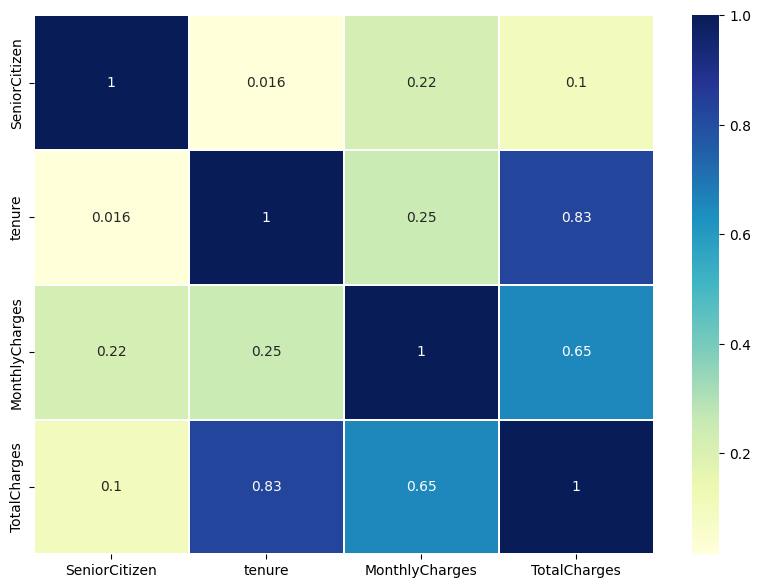
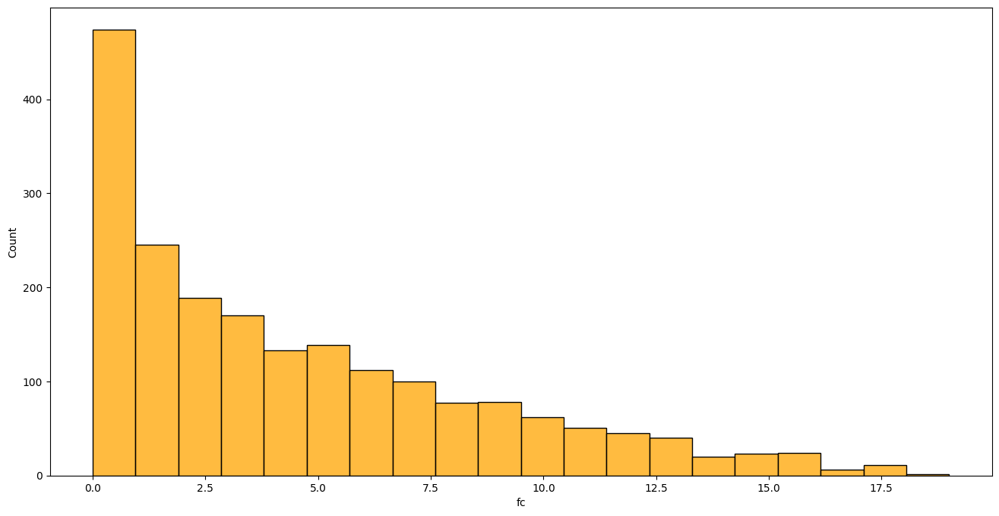
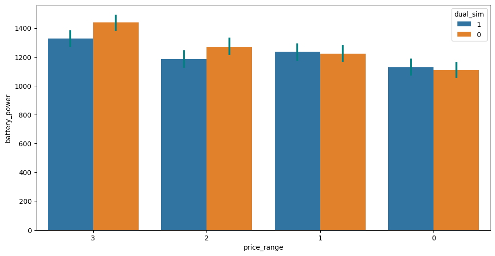
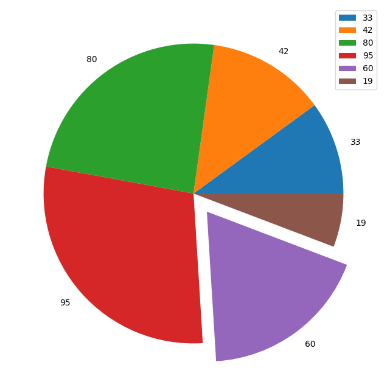

import pandas as pd
df = pd.read_csv('spreadsheet.csv')
# Penggunaan info
df.info()5 Validasi Data
5.1 Tugas Validasi Data
- Periksa/Nilai Kualitas Data
- Periksa/Nilai Tingkat Kecukupan Data
- Periksa/Nilai Kesesuaian Data
- Periksa/Nilai Konsistensi Data
5.2 Manfaat Validasi Data
- Tidak merusak perhitungan pada tahapan selanjutnya.
- Memvisualisasikan sebaran data, mendeteksi pola, dan mengidentifikasi anomali.
- Membantu menjelaskan dan mengkomunikasikan hasil analisis dengan lebih jelas.
5.3 Laporan Dokumentasi Data Validasi
Laporan dokumentasi data validasi, setidaknya memiliki parameter berikut:
- Kebenaran, misal di Indonesia isian Gender yang diakui hanya 2 P/W; Agama hanya 6 (Islam, Protestan, Katholik, Hindu, Budha, Konghucu)
- Kelengkapan, misal data provinsi seluruh Indonesia (34 prov), namun hanya sebagian yg ada.
- Konsistensi, misal penulisan STM atau SMK;
5.4 Validasi vs Verifikasi
- Validasi: memastikan bahwa data yang diinputkan sesuai dengan ketentuan yang berlaku.
- Verifikasi: memastikan bahwa data yang diinputkan sesuai dengan data yang ada.
5.5 Tahapan kritikal dalam validasi
- Tipe Data (integer, float, string)
- Ekspresi Konsisten (mis. Jalan, Jl., Jln.)
- Format Data (mis. utk tgl “YYYY-MM-DD” vs “DD-MM-YYYY.”)
- Nilai Null/Missing Values
- Misspelling/Type
- Invalid Data (gender: L/P: L; Laki-laki; P: Pria/Perempuan? )
5.6 Teknik Validasi Data
- Manual: melihat data secara langsung, misalnya melihat data di Excel.
- Statistik: menggunakan statistik deskriptif, misalnya melihat jumlah data, nilai maksimum, nilai minimum, dan lain-lain.
- Visualisasi: menggunakan visualisasi data, misalnya melihat sebaran data menggunakan histogram, boxplot, dan lain-lain.
5.7 Validasi Dengan Pandas
Method info() dapat digunakan untuk melihat informasi data frame, seperti jumlah baris, kolom, nilai non-NULL, tipe data, dan total penggunaan memori. Method ini sangat berguna dalam melakukan validasi tahap awal pada data.
5.8 Visualisasi Data
- Visualisasi data dapat membantu dalam memvalidasi data.
- Memvisualisasikan sebaran data, mendeteksi pola, dan mengidentifikasi anomali.
- Visualisasi yang baik dapat menceritakan sebuah cerita tentang data Anda dengan cara yang tidak dapat dilakukan oleh sebuah kalimat.
5.8.1 Jenis Visualisasi Data
- Perbandingan (Comparison)
- Bar Chart
- Line Chart
- Combo Chart
- Komposisi (Composition)
- Pie Chart
- Stacked Bar Chart
- Treemap
- Waterfall Chart
- Distribusi (Distribution)
- Histogram
- Box Plot
- Violin Plot
- Hubungan (Relationship)
- Scatter Plot
- Bubble Chart
- Heatmap
5.8.2 Library Visualisasi Data
Terdapat dua library populer untuk visualisasi data di Python, yaitu:
- Matplotlib: library yang paling populer untuk visualisasi data di Python. Umumnya diberi alias
plt.

- Seaborn: library yang dibangun di atas Matplotlib, sehingga memiliki sintaks yang mirip. Umumnya diberi alias
sns.

5.8.3 Korelasi & Causation
- Korelasi merupakan suatu pengukuran sejauh mana nilai saling ketergantungan antar variabel.
- Causation merupakan hubungan antara sebab dan akibat antara dua variabel
- Penting untuk mengetahui perbedaan antara keduanya dan bahwa korelasi tidak mendeskripsikan sebab-akibat.
- Menentukan korelasi jauh lebih sederhana, menentukan sebab memerlukan analisis lebih lanjut
5.8.4 Analisis Korelasi (Heatmap)
- Korelasi Pearson
- Mengukur hubungan linier antara dua variabel
- Korelasi Spearman
- Mengukur hubungan monotonik antara dua variabel
Visualisasi korelasi dapat dilakukan dengan menggunakan heatmap.
import seaborn as sns
import matplotlib.pyplot as plt
plt.figure(figsize=(10, 7))
sns.heatmap(df.corr('pearson'), annot=True, cmap='YlGnBu', linewidths=0.2)
5.8.5 Histogram
Histogram dapat membantu dalam melihat persebaran data.
sns.histplot(data = df, x= 'fc' ,color='orange', kde=False)
5.8.6 Bar Chart
Bar chart digunakan untuk membandingkan data-data yang berbentuk kategorikal.
sns.barplot(x='price_range',y='battery_power',data = df, order=[3,2,1,0], hue='dual_sim', hue_order=[1,0], errcolor='teal')
5.8.7 Pie Chart
Pie chart membantu memvisualisasikan komposisi elemen-elemen dalam sebuah data.
ax = plt.gca()
plt.pie(x=x, explode=[0, 0, 0, 0, 0.15, 0], labels=x)
plt.legend(x, loc='upper right')
plt.show()